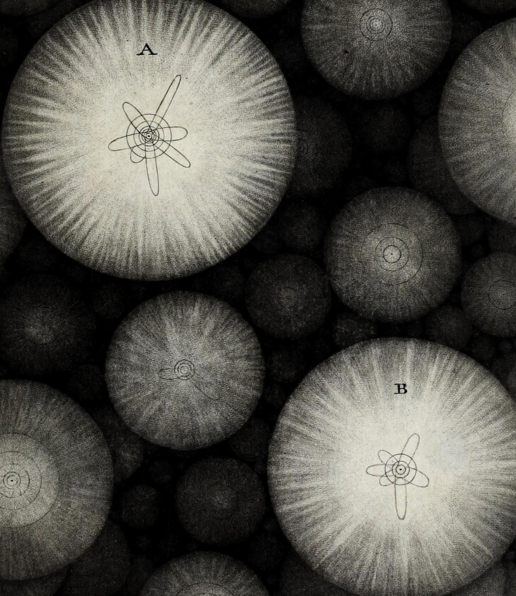

When Do Alternatives Threaten a Tie?
Social Networks Group · UC — Upcoming talk
Sociology · Stratification · Network science
I study how relational structures shape social change and inequality. My research connects changes in work, the dynamics of social ties, and patterns of diffusion and mobility.
PhD Candidate in Sociology
Pontificia Universidad Católica de Chile

Social Networks Group · UC — Upcoming talk
RC28 Summer Meeting · New York University